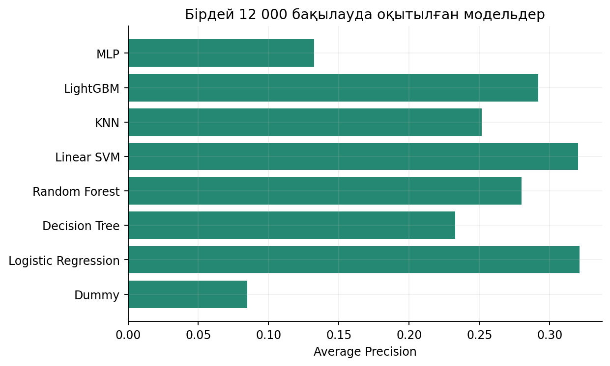
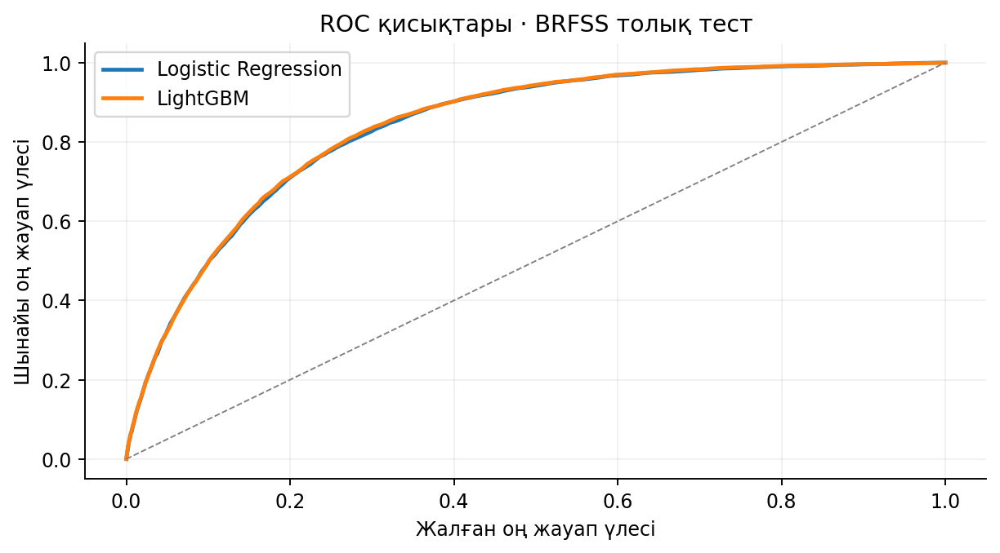
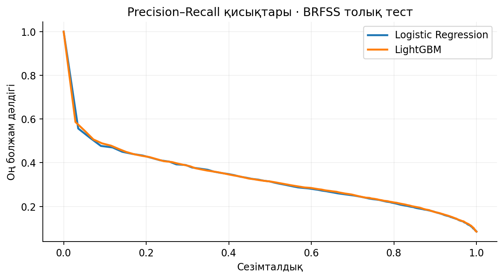
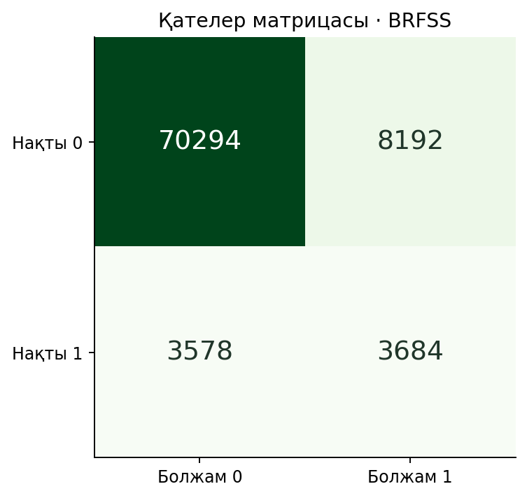
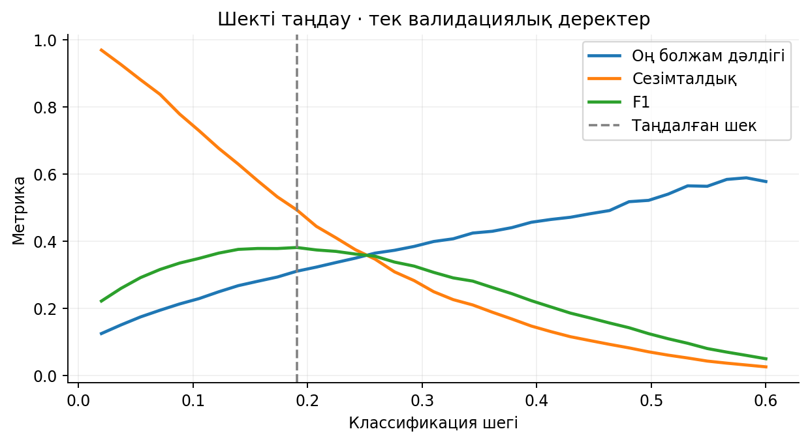
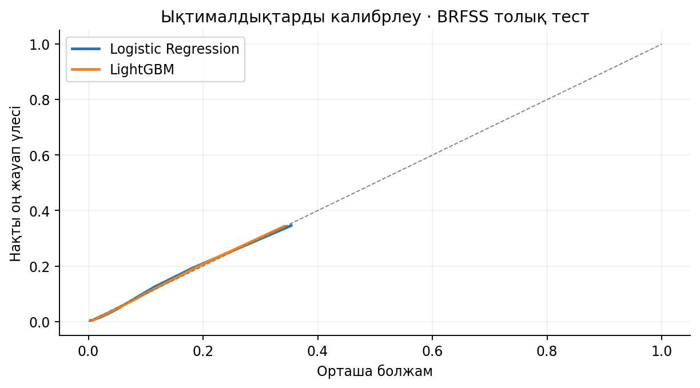
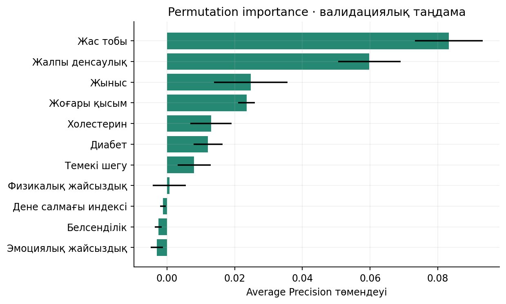
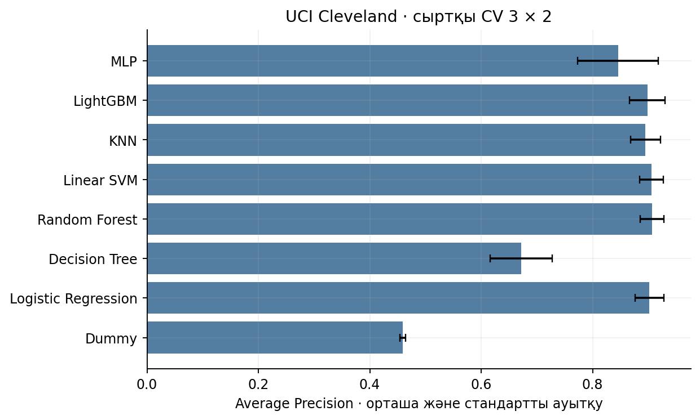

ДИПЛОМДЫҚ ЖОБА
Жүрек қан тамырлары ауруларын болжауға арналған машиналық оқыту модельдерін әзірлеу және салыстыру
CardioResearch интерактивті зерттеу қосымшасы
Бұл жұмыс CDC BRFSS 2023 сауалнамасы мен UCI Cleveland клиникалық деректері негізінде аурудың тіркелген болуын жіктейтін модельдерді зерттейді. Зерттеуде болашақта пайда болатын оқиға емес, қолда бар белгілер мен бұрын хабарланған диагноз арасындағы байланыс бағаланады.
Негізгі тәжірибеде 428 738 бақылау қолданылды. Үлкен деректердегі валидациялық Average Precision өлшемі бойынша логистикалық регрессия таңдалды. Оның тәуелсіз тесттегі ROC-AUC көрсеткіші 0.8389, Average Precision көрсеткіші 0.3209 болды. UCI тәжірибесі бөлек жүргізіліп, Random Forest сыртқы кросс-валидацияда орташа Average Precision 0.9066 көрсетті.
Жұмыс нәтижесі модельдерді оқыту және бағалау коды, сақталған эксперименттер, веб-қосымша, жеке болжам түсіндірмесі және есепті экспорттау мүмкіндігінен тұрады. Нәтижелер клиникалық қолдануға рұқсат немесе аурудың болашақ қаупінің расталған бағасы ретінде қарастырылмайды.
2026 жыл
Кіріспе
1 Машиналық оқыту арқылы медициналық жіктеу
2 Деректер және алдын ала өңдеу
3 Эксперимент әдістемесі
4 Нәтижелерді салыстыру және талқылау
5 Қосымшаның архитектурасы және іске асырылуы
6 Тексеру және қайта өндіру
Қорытынды
Пайдаланылған дереккөздер
Қосымша А Белгілер сөздігі
Қосымша Ә Тәжірибе параметрлері
| Белгі | Мағынасы |
|---|---|
| BRFSS | Behavioral Risk Factor Surveillance System |
| UCI | University of California Irvine деректер репозиторийі |
| AP | Average Precision |
| ROC-AUC | ROC қисығы астындағы аудан |
| CV | Кросс-валидация |
| SHAP | Shapley Additive Explanations |
| API | Қолданбалық бағдарламалау интерфейсі |
Медициналық және сауалнамалық деректердегі көптеген белгілер бір-бірімен байланысты. Бір ғана көрсеткішке сүйенген бағалау осы байланысты толық сипаттай алмауы мүмкін. Машиналық оқыту бірнеше белгіні бірге талдауға мүмкіндік береді, алайда оның сапасын деректердің көлемімен немесе алгоритм атауымен ғана дәлелдеуге болмайды. Бағалау процедурасының дұрыстығы, дереккөздің түсініктілігі және қателердің ашық көрсетілуі негізгі орын алады.
Жобаның өзектілігі ашық денсаулық деректерін ғылыми талаптарға сай өңдеу, әртүрлі алгоритмдерді бірдей шарттарда салыстыру және нәтижені қарапайым пайдаланушыға түсіндіру қажеттілігімен анықталады. Жүйе дәрігердің орнын басуға арналмаған. Ол деректерге негізделген жіктеудің мүмкіндігі мен шектеулерін көрсететін зерттеу құралы ретінде жасалды.
Зерттеудің мақсаты — жүрек-қан тамырлары жағдайларына қатысты тіркелген белгіні жіктейтін модельдерді әзірлеу, олардың сапасын қайталанатын эксперимент арқылы салыстыру және нақты оқытылған модельмен жұмыс істейтін интерактивті қосымша жасау.
Зерттеу объектісі — BRFSS респонденттерінің денсаулық туралы жауаптары және Cleveland пациенттерінің клиникалық көрсеткіштері. Зерттеу пәні — осы белгілерден бинарлық нәтижені бағалайтын машиналық оқыту әдістері, ықтималдықтарды калибрлеу және модель шешімін түсіндіру тәсілдері.
Мақсатқа жету үшін деректердің шығу тегін тексеру, мақсатты айнымалыны анықтау, арнайы жауап кодтарын өңдеу, ақпараттың ағып кетуін болдырмайтын бөлуді құру, жеті алгоритмді оқыту, қателер мен белгісіздікті бағалау, интерфейсті жүзеге асыру және жұмысты қайта өндіру нұсқаулығын дайындау міндеттері орындалды.
Жұмыстың практикалық маңызы — бір жүйеде сақталған дайын модель, айнымалылар сөздігі, есептеу нәтижелері және түсіндірілетін интерфейстің болуы. Қолданушы анкетаны толтырып, модель бағасын, таңдалған шекті және факторлар үлесін көре алады. Зерттеуші сол кодпен деректерді дайындау мен оқытуды қайта жүргізе алады.
Өзіндік үлес жаңа классификатор ұсынудан тұрмайды. Ол әртүрлі алгоритмдерді нақты деректерде әдістемелік тұрғыдан салыстыру, калибрлеу мен шек әсерін бөлу, деректердің екі түрін араластырмай зерттеу және нәтижелерді жұмыс істейтін қосымшаға жеткізу арқылы көрінеді.
Бірінші гипотеза: күрделі ансамбльдер қарапайым логистикалық регрессиядан барлық жағдайда басым болмайды. Екінші гипотеза: кластарды теңгеру сезімталдықты арттыра алады, бірақ ықтималдықтардың сапасын нашарлатуы мүмкін. Үшінші гипотеза: белгілер санын қысқарту интерфейсті жеңілдеткенімен, модельдің ажырату қабілетін төмендетуі ықтимал. Төртінші гипотеза: бір ғана Accuracy көрсеткіші оң класс сирек кездескенде модельдің практикалық мінез-құлқын жеткілікті сипаттамайды.
Бұл гипотезалар алдын ала күтілетін бағыттар ретінде берілді. Оларды тексеру нақты орындалған тәжірибелерге сүйенеді; қолайлы сан алу үшін тест нәтижесіне қарай модель немесе мақсат өзгертілмейді.
Бинарлық жіктеуде модель X белгілер жиыны үшін Y=1 класының бағасын шығарады. Бұл жобада BRFSS үшін Y=1 — адамның бұрын инфаркт немесе стенокардия/ишемиялық жүрек ауруы болғанын хабарлауы. UCI үшін Y=1 — деректерде аурудың бар екенін білдіретін диагностикалық код.
Болашақ оқиғаны болжау үшін бастапқы сәт, кейінгі бақылау мерзімі және сол аралықтағы оқиғалар қажет. Қолданылған BRFSS бір кезеңдегі сауалнама болғандықтан, модель жауабын «келесі он жылдағы инфаркт қаупі» деп атау дұрыс емес. Жалпы денсаулық бағасы мен белсенділік аурудан кейін өзгеруі де мүмкін. Осы себеппен алынған байланыстар алдын алу әсерін немесе себептілікті білдірмейді.
Логистикалық регрессия белгілердің сызықтық комбинациясын логистикалық функция арқылы ықтималдыққа түрлендіреді. Оның артықшылығы — есептеудің салыстырмалы жеңілдігі және тұрақты базалық нәтиже. Категориялар one-hot кодтаудан өтеді, ал сандық көрсеткіштер масштабталады. Регуляризация коэффициенттері шамадан тыс үлкен салмақтардың пайда болуын шектейді.
Шешім ағашы белгілер кеңістігін шарттар арқылы бөледі. Терең ағаш оқыту деректерін тым нақты есте сақтауы мүмкін, сондықтан максималды тереңдік пен жапырақтағы ең аз бақылау саны реттеледі. Random Forest бірнеше кездейсоқтандырылған ағаштың нәтижесін біріктіреді; бұл жеке ағаштың тұрақсыздығын азайтуға бағытталған.
Тірек векторлар әдісінің сызықтық нұсқасы кластар арасындағы шекараны құрады. Үлкен таңдамада ядролық әдістің есептеу құны жоғары болуы мүмкін болғандықтан, LinearSVC таңдалды. Ықтималдық шығару үшін оның бағасы оқыту бөліктерінің ішіндегі калибрлеумен түрлендіріледі.
KNN объектіні көрші бақылаулардың кластары арқылы бағалайды. Ол масштаб пен қашықтыққа сезімтал, ал болжау уақыты оқыту жиыны ұлғайған сайын артады. LightGBM ағаштарды кезеңмен қосатын градиенттік бустинг әдісі ретінде енгізілді. MLP шағын нейрондық желісі сызықтық емес тәуелділіктерді зерттеу үшін қолданылды; оның болуы автоматты түрде жоғары нәтиже береді деген болжам жасалмады.
DummyClassifier оң класс жиілігін ғана пайдаланады. Ол үлгілік белгілерді үйренбейді және күрделі модельдердің шынымен ақпарат қосатынын тексеретін бақылау нүктесі болып табылады. Оны негізгі алгоритмдермен бірге көрсету теңгерімсіз деректерде Accuracy нәтижесін түсіндіруге көмектеседі.
ROC-AUC модельдің оң және теріс объектілерді ранжирлеу қабілетін сипаттайды. Average Precision оң болжам дәлдігі мен сезімталдықтың өзгерісін біріктіреді және осы жұмыста негізгі таңдау өлшемі ретінде пайдаланылды. AP трапециялық PR-AUC есебімен бірдей деп қарастырылмайды.
Сезімталдық TP/(TP+FN) формуласымен анықталып, нақты оң бақылаулардың қаншасы табылғанын көрсетеді. Ерекшелік TN/(TN+FP) теріс бақылаулардың дұрыс анықталуын сипаттайды. Precision TP/(TP+FP) оң болжамдардың қандай бөлігі дұрыс екенін көрсетеді. F1 осы екі көрсеткіштің гармониялық ортасы болып табылады.
Brier score болжанған ықтималдық пен бинарлық жауаптың квадрат айырмасының орташа мәніне тең. Оның төмен болуы жақсы, бірақ ол тек калибрлеуді ғана емес, жалпы ықтималдық болжамының сапасын да қамтиды. Сондықтан ол калибрлеу графигімен бірге қарастырылды. Метрикалардың анықтамалары мен іске асырылуы scikit-learn құжаттамасымен салыстырылды [3].
CDC BRFSS 2023 бастапқы архивінен 433 323 жол және 350 баған оқылды. Дерек бірлігі — сауалнамаға жауап берген респондент. Түпнұсқа архив өзгертілмеді; оның көлемі мен SHA-256 бақылау сомасы sources.json файлында сақталды. Айнымалы мағыналары жергілікті HTML анықтамалығынан алынып, таңдалған үзінділер жеке есепке жазылды [1].
Мақсат CVDINFR4 және CVDCRHD4 жауаптарынан құрылды. Егер кемінде бір жауап 1 болса, мақсат 1; екі жауап та 2 болса, мақсат 0. Қалған комбинацияларда мақсат белгісіз деп есептелді. Осы ереже деректегі _MICHD айнымалысымен барлық жазба бойынша салыстырылып, айырмашылық табылған жоқ. Белгісіз мақсатты 4 585 жазба шығарылып, 428 738 бақылау сақталды.
Бастапқы деректердің ресми онлайн нұсқасы өзгеруі мүмкін болғандықтан, бұл жұмыс нәтижелерін нақты жергілікті архив пен оның бақылау сомасына қатысты түсіндіру керек. Дипломда архив атауы мен есептеу күні бірге сақталған. Дереккөздің онлайн сипаттамасы нақты талданған файлдың нұсқасын алмастырмайды.
| Қадам | Жазба саны | Шешім |
|---|---|---|
| Бастапқы XPT | 433 323 | Барлық жол оқылды |
| Мақсаты белгісіз | 4 585 | Оқыту мен бағалаудан шығарылды |
| Қалған бақылау | 428 738 | Белгілердегі пропусктар сақталды |
| Негізгі оқыту | 240 093 | Модель параметрлерін үйрену |
| Калибрлеу | 51 448 | Sigmoid параметрлерін үйрену |
| Валидация | 51 449 | Модель және шек таңдау |
| Тест | 85 748 | Соңғы тәуелсіз бағалау |
BRFSS үшін он бір белгі алдын ала таңдалды: жас тобы, жыныс, дене салмағы индексі, темекі шегу мәртебесі, соңғы айдағы дене белсенділігі, диабет, жоғары қан қысымы, жоғары холестерин, жалпы денсаулық бағасы және соңғы 30 күндегі физикалық әрі эмоциялық жайсыздық күндері.
Жас 13 санатпен ұсынылды; белгісіз санат жеке жас ретінде қолданылмайды. BMI бастапқы _BMI5 айнымалысын 100-ге бөлу арқылы алынды. PHYSHLTH және MENTHLTH үшін 88 коды нөл күнді, ал 77 және 99 белгісіз жауапты білдіреді. Диабет пен жоғары қысым сұрақтарындағы жүктілікке ғана қатысты жауап жеке санат ретінде сақталды. Осылайша «белгісіз», «жоқ» және арнайы клиникалық жағдайлар бір мәнге біріктірілмеді.
Категориялық пропусктар -1 арқылы кодталып, жеке one-hot санатына айналады. Сандық пропусктар оқыту бөлігінің медианасымен толтырылады. Медиана мен масштаб параметрлері әрбір CV қадамында қайта үйреніледі. Белгісіз мақсат толтырылмайды, себебі ол жасанды жауап енгізуге әкеледі.
Идентификаторлар, сауалнама салмақтары және мақсаттың құрамдас сұрақтары кіріс белгілеріне қосылмады. Бірдей жауаптары бар екі респондент автоматты түрде дубликат ретінде жойылған жоқ. Қайталанатын респондентті тексеру үшін штат пен PSU жұбы қолданылды; тексерілген жиында қайталау табылмады.
UCI архивінде бірнеше орталықтың деректері бар. Алдымен Cleveland, Hungary, Switzerland және VA өңделген файлдары қаралып, белгілердің толықтығы салыстырылды. Негізгі қосымша тәжірибе үшін 303 бақылауы бар Cleveland таңдалды. Бұл таңдау тест сапасына сүйенбейді: мақсат — бір орталықтағы бірізді 13 белгімен әдістемелік салыстыру жасау [2].
Cleveland белгілеріне жас, жыныс, кеуде ауыруының түрі, тыныштықтағы қысым, холестерин, ашқарындағы глюкоза категориясы, тыныштықтағы ЭКГ, жүктемедегі максималды жүрек соғу жиілігі, жүктемелік стенокардия, ST депрессиясы, ST еңісі, флюороскопиядағы тамыр саны және таллий сынағы кіреді. Бастапқы num мәні 0 болса теріс, 1–4 болса оң класс деп белгіленді.
BRFSS белгілері көбіне адамның хабарлаған жағдайын сипаттаса, UCI арнайы клиникалық тексерулерді қамтиды. Сондықтан екі жиынды біріктіру немесе бірінің метрикасын екіншісінің сыртқы тексеруі деп атау әдістемелік қате болар еді. Нәтижелер екі бөлек тәжірибе ретінде беріледі.
| Орталық | Бақылау | Орташа пропуск үлесі |
|---|---|---|
| Cleveland | 303 | 0.2% |
| Hungary | 294 | 20.5% |
| Switzerland | 123 | 17.1% |
| VA | 200 | 26.8% |
Негізгі мақсатты ереже мен белгілер тізімі анықталғаннан кейін BRFSS-тің 20%-ы тест ретінде бөлінді. Қалған деректер негізгі оқыту, калибрлеу және валидация бөліктеріне ажыратылды. Барлық бөлу стратификациямен және 20261107 кездейсоқтық тұқымымен орындалды. Жол идентификаторлары brfss_splits.json файлында сақталды; жиындар арасында қиылысу жоқ екені тестпен тексерілді.
Жеті алгоритмді бірдей есептеу шартында салыстыру үшін негізгі оқыту бөлігінен 12 000 бақылау алынды. Барлық модель дәл осы жолдарда үйренді және тест ішінен алдын ала бекітілген 12 000 бақылауда бағаланды. Бұл көлем KNN мен нейрондық желіні де бірдей бюджет аясында салыстыруға мүмкіндік берді. Үлкен таңдама тәжірибесінде логистикалық регрессия мен LightGBM 240 093 бақылауда бөлек оқытылды.
Салыстырмалы кесте мен үлкен таңдама кестесінің міндеті әртүрлі. Біріншісі алгоритмдерді бірдей деректе салыстырады; екіншісі екі масштабталатын әдістің көбірек деректегі мінез-құлқын көрсетеді. Бір кестедегі көрсеткіштерді екінші кестедегі басқа көлеммен оқытылған модельге тікелей жеңіс ретінде түсіндіруге болмайды.
BRFSS салыстырмалы тәжірибесінде әр алгоритмнің бастапқы конфигурациясы үш стратификацияланған бөлікте бағаланды. Одан кейін RandomizedSearchCV арқылы үш конфигурация қаралды. Негізгі таңдау өлшемі Average Precision болды. Бұл бюджет толық оңтайландыруды білдірмейді; ол берілген компьютердегі бақыланатын және қайталанатын салыстыру болып табылады.
Барлық модельде сандық белгілерге медианалық толтыру мен масштабтау, категорияларға тұрақты белгісіз санат және one-hot кодтау қолданылды. Бұл операциялар Pipeline ішінде орналасқандықтан, валидациялық бөліктің статистикасы оқытуға кірмейді. Қолданылатын санаттар ресми анықтамалықтан алынған, тесттен үйренілмеген.
UCI таңдама көлемі шағын болғандықтан, сыртқы үш бөлік екі рет қайталанды. Әр сыртқы оқыту жиынының ішінде үш бөлікті CV арқылы екі кездейсоқ конфигурация салыстырылды. Сыртқы тест бөлігі параметр таңдауына қатыспады. Нәтижелер алты сыртқы бағалаудың орташа мәні және стандартты ауытқуы түрінде ұсынылады. Соңғы қолданбалық модель барлық Cleveland дерегінде қайта оқытылды; оның сапасы жаңа тәуелсіз деректе тексерілді деп айтылмайды.
Логистикалық регрессия мен LightGBM үшін бастапқы ықтималдықтарға sigmoid калибрлеу қарастырылды. Калибратор тек арнайы бөлінген 51 448 бақылауда үйренді. Бастапқы және калибрленген нұсқаның Brier score мәндері валидацияда салыстырылды. Логистикалық регрессияға қосымша калибрлеу таңдалды, LightGBM үшін бастапқы ықтималдық сақталды.
Классификация шегі валидациялық F1 максимумымен анықталды. Таңдалған логистикалық модель үшін ол 0.190424 болды. Бұл клиникалық хаттамадан алынған қауіп шегі емес; ол зерттеудің математикалық таңдау ережесі. Оны «төмен», «орташа», «жоғары» медициналық қауіп санаттарына айналдыруға негіз жоқ.
Модельдің аты, калибрлеу шешімі және шек selection_lock.json файлында тест бағасына дейін сақталды. Тестте басқа алгоритм сәл жоғары нәтиже көрсетсе де, енгізілген модель автоматты түрде ауыстырылмайды. Осы қағида тесттің тәуелсіз бағалау рөлін сақтайды.
CDC сауалнама салмақтары популяциялық дизайнмен байланысты, ал class_weight алгоритмдегі класс шығынын өзгертеді. Екеуі бір мағынаны білдірмейді. Негізгі оқыту мен таңдау респондент деңгейіндегі салмақсыз есеппен орындалды. Тестте _LLCPWT арқылы салмақталған метрикалар қосымша берілді; бөлек сезімталдық тәжірибесінде логистикалық регрессия осы салмақтармен оқытылды.
Негізгі модельдің 95% интервалдары 200 респонденттік bootstrap қайталауымен бағаланды. Модельдер арасындағы AP айырмасы бірдей қайта таңдалған жолдарда есептелді. Бұл интервалдар дайын модель шартында тест респонденттерінің өзгеруін көрсетеді. Олар модельді қайта оқыту, сауалнама стратификациясы мен кластерлік дизайнды толық қамтымайды, сондықтан популяциялық дәл интервал ретінде түсіндірілмейді.
1-кесте. BRFSS: 12 000 оқыту және 12 000 тест бақылауы. Барлық модель үшін шек 0,5. Көрсеткіштер салмақсыз есептелген.
| Модель | ROC-AUC | AP | Recall | F1 | Brier |
|---|---|---|---|---|---|
| Dummy | 0.5000 | 0.0847 | 0.0000 | 0.0000 | 0.0775 |
| Logistic Regression | 0.8373 | 0.3212 | 0.0492 | 0.0901 | 0.0661 |
| Decision Tree | 0.7776 | 0.2328 | 0.0217 | 0.0414 | 0.0712 |
| Random Forest | 0.8156 | 0.2800 | 0.0000 | 0.0000 | 0.0687 |
| Linear SVM | 0.8373 | 0.3202 | 0.0453 | 0.0838 | 0.0662 |
| KNN | 0.7953 | 0.2517 | 0.0030 | 0.0059 | 0.0694 |
| LightGBM | 0.8249 | 0.2917 | 0.0374 | 0.0699 | 0.0676 |
| MLP | 0.6063 | 0.1324 | 0.0000 | 0.0000 | 0.0837 |
Бақылау моделі жоғары Accuracy көрсете алады, бірақ барлық объектіні теріс классқа жатқызғанда сезімталдық нөлге тең. Бұл деректерде оң класс аз болғандықтан, Accuracy жалғыз қолданылса нәтиже туралы жаңсақ әсер береді. Салыстыруда AP пен ROC-AUC, сонымен қатар таңдалған шектегі қателер бірге қаралды.
Логистикалық регрессия және сызықтық SVM шағын бірдей таңдамада жоғары нәтижелерге жетті. Ағаш пен KNN төменірек нәтиже көрсетті. MLP-тің тесттегі AP мәні CV бағасынан айтарлықтай төмен болды. Бұл нәтиже жасырылмады: берілген шағын архитектура, шектеулі баптау бюджеті және ерте тоқтау ережесі тұрақты артықшылық бермеді. Сондықтан бұл тәжірибе барлық нейрондық желілер туралы жалпы қорытынды жасауға негіз емес.

| Модель | Валидация AP | Тест AP | Тест ROC-AUC | Тест Brier |
|---|---|---|---|---|
| Logistic Regression | 0.3199 | 0.3209 | 0.8389 | 0.0660 |
| LightGBM | 0.3189 | 0.3246 | 0.8410 | 0.0657 |
Валидацияда логистикалық регрессияның AP мәні 0.3199, ал LightGBM мәні 0.3189 болды. Алдын ала бекітілген таңдау ережесі логистикалық регрессияны таңдады. Тестте LightGBM AP=0.3246 нәтижесін көрсетіп, логистикалық регрессиядан AP бойынша сәл жоғары болды. Бұл факт ашық берілді, бірақ тест нәтижесіне қарап негізгі модель ауыстырылмады.
Логистикалық регрессия мен LightGBM арасындағы тест AP айырмасының жұпталған bootstrap интервалы -0.0065 мен -0.0007 аралығында орналасады. Ол осы бекітілген модельдер мен осы тест жиыны үшін LightGBM пайдасына шағын айырманы көрсетеді. Бұл алгоритмнің барлық жағдайдағы басымдығы немесе клиникалық тиімділігі туралы дәлел емес.
Негізгі модельдің тест ROC-AUC мәні 0.8389; 95% жуық интервалы 0.8348–0.8433. AP=0.3209; интервалы 0.3108–0.3316. Шектегі сезімталдық 50.7%, ерекшелік 89.6%, оң болжам дәлдігі 31.0%. Бұл көрсеткіштер модельдің қателері елеулі екенін айқын көрсетеді.


Бекітілген шекте тест жиынында 3684 шынайы оң, 70294 шынайы теріс, 8192 жалған оң және 3578 жалған теріс жауап алынды. Жалған теріс нәтиже модель ауру туралы хабарланған бақылаудың бір бөлігін анықтамағанын білдіреді. Жалған оң нәтиже анкета үлгісі оң классқа ұқсас болғанымен, сауалнама мақсаты теріс болғанын көрсетеді.
Шекті азайту сезімталдықты көтеріп, жалған оң жауаптарды көбейтеді. Шекті жоғарылату кері әсер етеді. Жұмыста F1 максимумы зерттеу ережесі ретінде қолданылды; нақты клиникалық жағдайда шекті таңдау үшін қате құны, қолдану мақсаты және тәуелсіз медициналық бағалау қажет болар еді.


| Нұсқа | AP | Recall | Brier |
|---|---|---|---|
| Logistic standard | 0.3199 | 0.0732 | 0.0663 |
| Logistic balanced | 0.3194 | 0.7809 | 0.1708 |
| Logistic survey weighted | 0.3184 | 0.0661 | 0.0664 |
| Logistic without scaling | 0.3199 | 0.0741 | 0.0663 |
| Logistic reduced features | 0.2647 | 0.0165 | 0.0691 |
Класс салмағын balanced етіп орнату валидациялық сезімталдықты арттырды, бірақ Brier score айтарлықтай нашарлады. Бұл модельдің оң класты көбірек белгілеуі оның ықтималдық бағасы автоматты түрде жақсы дегенді білдірмейтінін көрсетеді. Сауалнама салмақтарымен оқыту басқа мақсатты басымдықтарға әсер етеді; оның нәтижесі де жеке жол ретінде берілді.
Жеті белгіге қысқартылған нұсқада жалпы денсаулық, физикалық және эмоциялық жайсыздық күндері, холестерин алынып тасталды. Бұл комбинация алдын ала бекітілген жеңіл анкета тәжірибесі болды; ол ең жақсы жеті белгіні табатын толық іздеу емес. AP төмендеді, сондықтан осы қысқарту сапаны сақтады деп қорытынды жасауға болмайды. Масштабтау әсері осы конфигурациядағы логистикалық регрессияда шағын болды, бірақ бұл барлық алгоритмге ортақ қорытынды емес.
Қосымша sigmoid калибрлеудің әсері Brier score арқылы бөлек тексерілді. Екі нұсқа да бір валидациялық деректе салыстырылды; тесттегі калибрлеу қисығы шешім қабылдау үшін қайта пайдаланылмады.

Permutation importance валидациялық бөліктен алынған 2000 бақылауда бес қайталаумен есептелді. Ең үлкен төмендеу жас тобы мен жалпы денсаулық бағасын алмастырғанда байқалды. Кейбір белгілерде орташа өзгеріс теріс болды. Бұл олардың міндетті түрде зиянды екенін дәлелдемейді: шағын подвыборка, өзара байланыс және кездейсоқ өзгеріс әсер етуі мүмкін.
Жеке болжам үшін интервенциялық Шепли үлестерін бағалайтын permutation sampling алгоритмі іске асырылды. Фон ретінде оқыту жиынындағы 30 бақылау пайдаланылды. Әр анкета үшін 48 белгі реті, оның ішінде кері ретті жұптар есептеледі. Белгілер кезекпен анкетадағы мәнге ауыстырылып, ықтималдық айырмалары жинақталады. Бұл — SHAP қағидасына сәйкес жеке үлестердің өзіндік сандық бағалауы; сыртқы shap кітапханасын шақыру емес [5].
Фондық орташа мен барлық үлестер қосындысы базалық модель ықтималдығына тең болуы тексерілді. Түсіндірме қосымша sigmoid калибрлеуге дейінгі ықтималдық бірлігінде беріледі. Соңғы калибрленген санмен айырмашылық интерфейсте ашық көрсетілген. Фонды алмастыру өзара байланысты белгілердің шартты таралуын толық сақтамайды, сондықтан бұл түсіндірмелерді себепті әсер ретінде түсіндіруге болмайды.

| Модель | ROC-AUC | AP орташа | AP SD | Recall |
|---|---|---|---|---|
| Dummy | 0.5000 | 0.4587 | 0.0051 | 0.0000 |
| Logistic Regression | 0.9069 | 0.9018 | 0.0258 | 0.8127 |
| Decision Tree | 0.7732 | 0.6718 | 0.0553 | 0.7340 |
| Random Forest | 0.9110 | 0.9066 | 0.0209 | 0.7698 |
| Linear SVM | 0.9075 | 0.9059 | 0.0212 | 0.7912 |
| KNN | 0.9014 | 0.8949 | 0.0266 | 0.7195 |
| LightGBM | 0.9017 | 0.8981 | 0.0318 | 0.8094 |
| MLP | 0.8620 | 0.8457 | 0.0723 | 0.6407 |
Cleveland деректерінде Random Forest сыртқы CV бойынша AP=0.9066 орташа мәнімен таңдалды. Оның ROC-AUC орташа мәні 0.9110. Логистикалық регрессия мен сызықтық SVM де жақын нәтижелер көрсетті. Алты бағалау бір-бірінен толық тәуелсіз емес, өйткені бақылаулар әртүрлі қайталауда қайта пайдаланылады; сондықтан стандартты ауытқу сенімділік интервалы ретінде көрсетілмейді.
Әр алгоритмнің гиперпараметрлері ішкі CV-де таңдалғанымен, ең жақсы алгоритмді бірнеше кандидат арасынан таңдау қосымша белгісіздік туғызады. Оны жою үшін тәуелсіз сыртқы клиникалық дерек қажет. Осы жұмыста басқа орталықтарға тасымалдану дәлелденген жоқ. UCI метрикаларының BRFSS-тен жоғары болуы клиникалық белгілер, іріктеу және мақсат айырмашылықтарымен бірге қарастырылуы тиіс.

CardioResearch үш логикалық қабатқа бөлінген. Деректер мен модель қабаты архивтерді оқиды, белгілерді дайындайды, тәжірибелерді жүргізеді және артефакттарды сақтайды. FastAPI сервері сақталған модель арқылы сұрауларды өңдейді. React және TypeScript интерфейсі анкетаны, салыстыру кестелерін, Plotly графиктерін және файл жүктеуді көрсетеді.
Оқыту пайдаланушы әр анкета жіберген сайын қайта орындалмайды. Қосымша дайын Pipeline, классификатор, калибратор, белгілер тізімі және шегі бар ModelBundle объектісін жүктейді. Бұл зерттеу коды мен сервер болжамының бірдей болуын қамтамасыз етеді. Модель нұсқасы сақталған файлдың хэшінен алынады.
SQLite базасында тек эксперименттің атауы, уақыты және нәтижелер JSON-ы сақталады. Жеке пайдаланушы анкеталары тарихқа жазылмайды. CSV уақытша жадта өңделеді, ал PDF жауап ретінде жасалады. Қосымша жергілікті компьютерде жұмыс істеуге бағытталған; ашық интернетке орналастыру осы жұмыстың міндетіне кірмейді.
| Қабат | Құрал | Жауапкершілік |
|---|---|---|
| Деректер | pandas, BeautifulSoup | XPT, CSV және анықтамалықты өңдеу |
| Модель | scikit-learn, LightGBM | Pipeline, CV, калибрлеу, метрикалар |
| Сервер | FastAPI | Валидация, болжам, CSV, PDF |
| Интерфейс | React, TypeScript, Plotly | Анкета, графиктер, нәтижелер |
| Артефакт | joblib, JSON, SQLite | Модельдер мен тәжірибелерді сақтау |
Негізгі экранда таңдалған дерек, бақылаулар саны, қолданылған алгоритмдер және модельдің нақты бағалары көрсетіледі. «Анализ данных» беті класс үлесін, пропусктарды және белгілер сөздігін береді. «Сравнение моделей» бетінде бірдей таңдама тәжірибесі мен үлкен деректер тәжірибесі бөлек ауыстырылады.
Жеке бағалау формасы тек модель кірістерінен құралады. BRFSS мақсатына кіретін инфаркт немесе ишемиялық ауру туралы сұрақтар формаға қосылмайды. Сандық өрістер диапазонмен, категориялар таңдау тізімімен шектелген. Белгісіз көрсеткішті бос қалдыруға болады, бірақ есептеу үшін кемінде үш көрсеткіш қажет; бұл интерфейстің минималды толтыру талабы және медициналық жеткіліктілік ережесі емес.
Нәтиже экранында ықтималдық бағасы, зерттеу шегі, модель атауы және нұсқасы көрсетіледі. «Почему такая оценка» әрекеті жеке Шепли үлестеріне апарады. Демомысалдар тек интерфейсті тексеруге арналған ойдан алынған мәндер ретінде белгіленген және оқыту деректеріне қосылмайды.
Пакеттік режим UTF-8 CSV файлын қабылдайды. Шектеу — 1 МБ және 1000 жол. Сервер баған атауларын, мән типтерін және диапазондарын тексереді; қате болса жол нөмірін хабарлайды. Экспортқа тек тексерілген сандық деректер мен есептелген нәтижелер енгізіледі. PDF есебінде көрсеткіштер, модель нұсқасы, ықтималдық, шек, түсіндірме және қолдану шектеуі бар.
Интерфейс орыс тілінде жасалды, ал диплом мен қорғау материалдары қазақ тілінде дайындалды. Өрістердің метадеректері бір орталық сөздікте сақталғандықтан, кейін қазақша интерфейс енгізуге құрылымдық мүмкіндік бар; толық екітілді интерфейс іске асырылды деп айтылмайды.
Дизайнда қара-жасыл навигация, ашық фон және бірізді кестелер қолданылды. Тар экранда мәзір жиналып, карточкалар бір бағанға өтеді. Бос нәтиже, жүктелу және қате жағдайлары бөлек көрсетіледі. Графиктердегі мәндер зерттеу JSON файлдарынан алынады; статикалық жалған метрикалар қолданылмайды.
Функционалдық тексерулер ғылыми қателер мен қолданбалық қателерді бірге қамтыды. Мақсатты айнымалының барлық маңызды жауап комбинациялары, 88/77/99 арнайы кодтары, оқыту мен тест жиындарының қиылыспауы және мақсатты ашатын белгілердің кірісте болмауы тексерілді. Жүктелген модельдің тікелей болжамы API нәтижесімен сандық дәлдікке дейін салыстырылды.
Түсіндірменің аддитивтілігі екі жолмен тексерілді: дайын модельдегі фон мен үлестер қосындысы және аналитикалық шешімі белгілі сызықтық тест. Қате категория, жарамсыз диапазон, бөлшек күн саны, белгісіз баған, бос анкета, жарамсыз CSV және жоқ модель жағдайлары тексерілді. Пакеттік нәтиже жеке болжаммен салыстырылды, PDF файлының жасалуы расталды.
Тексерілген негізгі автоматты жиын 14 тесттен тұрды. Қосымшаның жинақталуы TypeScript және Vite арқылы тексерілді. Браузерде негізгі бет, анкета және нақты модель бағасы қаралды. Тест журналы мен JUnit нәтижесі жоба ішінде сақталған. Docker конфигурациясы берілді; контейнерді нақты іске қосу мәртебесі бөлек тексеру есебінде көрсетіледі.
| Команда | Мақсаты |
|---|---|
| python -m cardio.prepare | Архивтерден деректерді дайындау |
| python -m cardio.train | Бекітілген тәжірибелерді қайта орындау |
| python -m pytest -q tests | Функционалдық тексерулер |
| npm.cmd run build | frontend папкасында интерфейсті жинау |
| START.cmd | Windows-та жергілікті серверді іске қосу |
Қайта өндіру үшін бастапқы архивтер Downloads папкасында болуы немесе CARDIO_DATA_SOURCE айнымалысы арқылы басқа папка көрсетілуі керек. Python тәуелділіктері requirements.txt файлында, интерфейс тәуелділіктері package-lock.json файлында берілген. Нақты пайдаланылған негізгі кітапхана нұсқалары environment.json файлында сақталған.
Оқыту аяқталғаннан кейін models папкасында екі негізгі модель, reports ішінде кестелер, графиктер, бөлулер және таңдау хаттамасы пайда болады. Қосымшаны іске қосуға бастапқы үлкен XPT қажет емес: дайын модельдер мен агрегатталған есептер жеткілікті. Бірдей seed қайта өндіруге көмектескенімен, басқа аппараттық орта немесе кітапхана нұсқасы аздаған сандық айырмашылық беруі мүмкін.
Біріншіден, BRFSS мақсаттары адамның өз жауабына негізделген. Диагноз туралы хабардар болу, есте сақтау және медициналық қызметке қолжетімділік нәтижеге әсер етуі мүмкін. Екіншіден, модель белгілері аурудан кейін өзгерген жағдайларды да қамтиды, сондықтан бұл алдын ала уақыттық тәуекел моделі емес.
Үшіншіден, негізгі ықтималдықтар салмақсыз респонденттік мақсатқа үйретілген. Салмақталған метрикалар қосымша болғанымен, толық күрделі сауалнама дизайнына сәйкес қорытынды жасалмады. Төртіншіден, гиперпараметрлердің іздеу бюджеті шектеулі; бұл нәтижелер алгоритмдердің абсолютті мүмкіндігін емес, орындалған конфигурацияларды сипаттайды.
Бесіншіден, UCI Cleveland тарихи және шағын клиникалық таңдама болып табылады. Оның нәтижесін қазіргі кең популяцияға немесе Қазақстан тұрғындарына автоматты түрде тасымалдауға болмайды. Алтыншыдан, SHAP түсіндірмелері модель механизмін сипаттайды; олардың клиникалық түсіндірмесі мен себепті мағынасы тәуелсіз зерттеуді қажет етеді.
Жобаның жалғасы ретінде жаңа деректе алдын ала бекітілген хаттамамен сыртқы тексеру, уақыттық бақылауға негізделген басқа міндет немесе зерттеу дизайнын толық есепке алу қарастырылуы мүмкін. Бұл бағыттар осы жұмыста орындалған нәтиже ретінде берілмейді.
Жоба аясында ашық нақты деректермен жүрек-қан тамырлары жағдайларына қатысты бинарлық жіктеу міндеті жүзеге асырылды. BRFSS үшін 433 323 бастапқы жазба өңделіп, мақсат анықталған 428 738 бақылау алынды. Мақсатты белгі ресми _MICHD айнымалысымен толық сәйкес келді. UCI Cleveland 303 пациентпен бөлек зерттелді.
Жеті негізгі алгоритм және бақылау классификаторы бірдей жағдайларда салыстырылды. Үлкен BRFSS тәжірибесінде валидациялық AP өлшемімен таңдалған логистикалық регрессия тестте ROC-AUC=0.8389 және AP=0.3209 көрсетті. Тестте LightGBM сәл жоғары AP берді, бірақ модель таңдау ережесі өзгертілмеді. Осы айырмашылықты ашық көрсету тесттің тәуелсіздігін сақтауға мүмкіндік берді.
Кластарды теңгеру, масштабтау, белгілерді қысқарту, калибрлеу және шек таңдаудың әсері талданды. Нәтижелер күрделірек алгоритм әрқашан жақсы болмайтынын, Accuracy көрсеткішінің жалғыз өзі жеткіліксіз екенін және сезімталдық пен ықтималдық сапасының бөлек қарастырылуы керек екенін көрсетті. UCI-де Random Forest орташа AP=0.9066 нәтижесімен таңдалды, бірақ бұл қорытынды шағын таңдама шегінде ғана жарамды.
Сақталған модельдер FastAPI және React қосымшасына енгізілді. Жеке бағалау, Шепли үлестерімен түсіндіру, модельдерді салыстыру, CSV пакеттік өңдеу және PDF экспорт іске асырылды. Деректерді дайындау мен оқыту командалары, конфигурациялар және тексерулер берілді. Нәтижесінде қорғалатын ғылыми тұжырымдары мен жұмыс істейтін бағдарламалық бөлігі өзара келісілген зерттеу прототипі жасалды.
[1] CDC. 2023 BRFSS Survey Data and Documentation. https://www.cdc.gov/brfss/annual_data/annual_2023.html
[2] Janosi A., Steinbrunn W., Pfisterer M., Detrano R. Heart Disease. UCI Machine Learning Repository. DOI: 10.24432/C52P4X. https://archive.ics.uci.edu/dataset/45/heart+disease
[3] scikit-learn 1.7.2. Metrics and scoring. https://scikit-learn.org/1.7/modules/model_evaluation.html
[4] scikit-learn 1.7.2. Cross-validation: evaluating estimator performance. https://scikit-learn.org/1.7/modules/cross_validation.html
[5] Lundberg S. M., Lee S.-I. A Unified Approach to Interpreting Model Predictions. 2017. https://arxiv.org/abs/1705.07874
[6] scikit-learn. Probability calibration. https://scikit-learn.org/stable/modules/calibration.html
[7] LightGBM 4.7.0. LGBMClassifier documentation. https://lightgbm.readthedocs.io/en/stable/pythonapi/lightgbm.LGBMClassifier.html
[8] CDC BRFSS 2023 Codebook. Жергілікті архив: codebook23_llcp-v2-508 (1).zip; файл: USCODE23_LLCP_021924.HTML. Таңдалған үзінділер reports/codebook_excerpts.json файлында сақталған.
Онлайн дереккөздер тексерілген күн: 2026 жылғы 7 қараша. Нәтижелер жергілікті архивтердің сақталған бақылау сомаларына қатысты.
| Өріс | Мазмұны | Бастапқы баған |
|---|---|---|
| age_group | Жас тобы | _AGEG5YR |
| sex | Жыныс | SEXVAR |
| bmi | Дене салмағы индексі | _BMI5 / 100 |
| smoking | Темекі шегу мәртебесі | _SMOKER3 |
| activity | Дене белсенділігі | EXERANY2 |
| diabetes | Диабет туралы жауап | DIABETE4 |
| hypertension | Жоғары қысым туралы жауап | BPHIGH6 |
| cholesterol | Жоғары холестерин туралы жауап | TOLDHI3 |
| general_health | Жалпы денсаулық | GENHLTH |
| physical_days | Физикалық жайсыздық күндері | PHYSHLTH |
| mental_days | Эмоциялық жайсыздық күндері | MENTHLTH |
Категория кодтарының толық мағынасы reports/schema.json және қосымшаның деректер бетінде берілген. Белгісіз мән JSON ішінде null, CSV ішінде бос ұяшық арқылы беріледі. Мақсат, салмақ және идентификаторлар пайдаланушы формасына кірмейді.
{}
CV AP: 0.0847; бастапқы CV AP: 0.0847; іздеу және қайта оқыту уақыты: 0.11 секунд.
{"model__class_weight": null, "model__C": 10}
CV AP: 0.2971; бастапқы CV AP: 0.2976; іздеу және қайта оқыту уақыты: 0.92 секунд.
{"model__min_samples_leaf": 50, "model__max_depth": 8}
CV AP: 0.2285; бастапқы CV AP: 0.2146; іздеу және қайта оқыту уақыты: 0.70 секунд.
{"model__min_samples_leaf": 25, "model__max_depth": null}
CV AP: 0.2807; бастапқы CV AP: 0.2786; іздеу және қайта оқыту уақыты: 4.33 секунд.
{"model__estimator__svm__class_weight": "balanced", "model__estimator__svm__C": 0.1}
CV AP: 0.2967; бастапқы CV AP: 0.2949; іздеу және қайта оқыту уақыты: 2.50 секунд.
{"model__weights": "uniform", "model__n_neighbors": 61}
CV AP: 0.2623; бастапқы CV AP: 0.2550; іздеу және қайта оқыту уақыты: 4.11 секунд.
{"model__reg_lambda": 2, "model__num_leaves": 15, "model__min_child_samples": 20}
CV AP: 0.2823; бастапқы CV AP: 0.2791; іздеу және қайта оқыту уақыты: 2.38 секунд.
{"model__hidden_layer_sizes": [24], "model__alpha": 0.5}
CV AP: 0.2413; бастапқы CV AP: 0.1338; іздеу және қайта оқыту уақыты: 7.14 секунд.
Уақыт осы компьютерде өлшенген. Ол параметр іздеу мен қайта оқытуды қамтиды; таза бір модельдің fit уақытымен шатастырмау керек. Толық сынақтар тарихы brfss_search.json файлында бар.